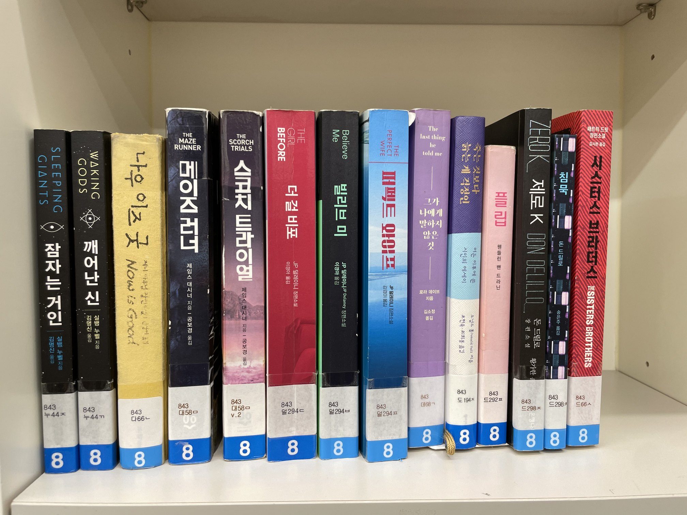
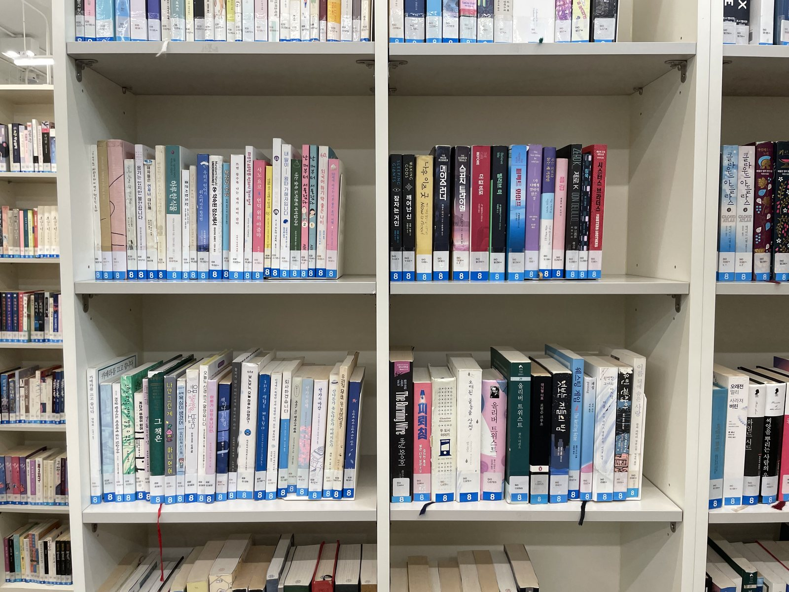
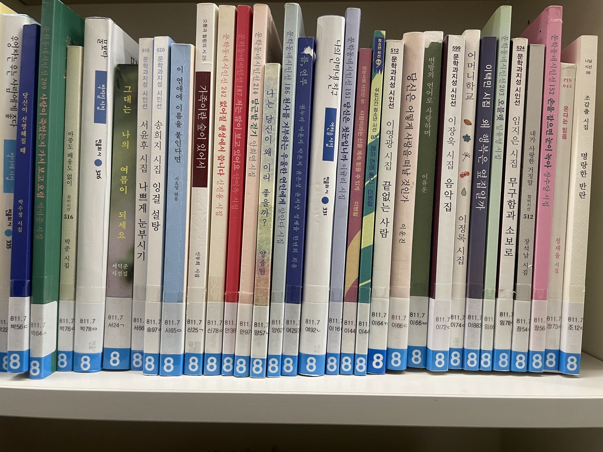

LibAR · 온디바이스 서가 인식
폰 브라우저 안의 AI 세 개는 이 사진 한 장으로 답을 냅니다.

영미 문학 서가 한 칸. 라벨은 843 누44ㅈ처럼 분류번호와 저자기호로 되어 있고, 왼쪽에서 오른쪽으로 갈수록 커져야 정상입니다. 사서는 이걸 한 쌍씩 눈으로 비교합니다.
직접 학습시킨 YOLO가 청구기호 라벨 스티커만 타이트하게 찾아냅니다. 이 사진에서 14개. 아직 글자는 한 글자도 읽지 않았습니다.
읽어낸 글자를 장서목록 20,944권과 대조해 12권을 특정했습니다. 옆 칸에 걸쳤거나 글자가 잘린 나머지는 “확정하지 않음”으로 남깁니다 — 억지로 맞추지 않습니다.
843-누44ㄲ. 맨 왼쪽이 누44ㅈ인데 바로 옆이 누44ㄲ입니다. 저자기호가 같은 누44에서 ㄲ은 ㅈ보다 앞이니, 이 두 권은 순서가 뒤집혀 있습니다. 사진을 확대하면 직접 확인하실 수 있습니다. 나머지 11권은 제자리입니다.
출처 out_ondevice/closeup_02_ft_result.json — 근접 촬영 한 장의 판정 결과 원본.
문제 정의
반납 정리 중에도 생기고, 이용자가 아무 데나 꽂고 가서 매일 생깁니다. 목록에는 “대출 가능”인데 서가에는 없는, 사실상 사라진 책입니다.
이걸 잡으려면 장서점검을 해야 하는데, 장서점검은 사람이 라벨을 하나씩 눈으로 읽어 순서를 확인하는 수작업입니다. RFID 같은 자동화 장비는 태그와 전용 설비 비용이 듭니다. 그래서 점검은 미뤄지고, 사라진 책은 쌓입니다.
이 저장소에는 육안 점검 소요 시간을 실측한 기록이 없습니다. 발표 대본에 “수십 분”이라는 표현이 있으나 측정 근거 파일이 없어 수치로 쓰지 않았습니다. 비교를 완성하려면 현장에서 한 칸을 스톱워치로 재는 측정이 필요합니다.
15:36:37에 시작해 15:44:56에 끝난 연속 세션. 서가 4칸 · 79권을 판독하고 오배열 3건을 감지했습니다. 기기는 iPhone Safari, 서버 호출 0회.
WebGPU 21초 · WASM 폴백 33초. 기기 편차를 포함하면 10~40초 구간입니다. AI 세 개를 폰 안에서 돌리는 비용이고, 발열 최적화로 계속 낮추는 중입니다.
출처 세션 타임라인·권수·오배열 = 앱이 생성한 리포트 5건의 report.json
(libar-sample/260723 현장리포트/*.zip) · 판독 시간 = 개발일지_아카이브_260720시점.md,
팀공유_최종모델로직_260726.html
⚠ 사용하지 않은 수치 README의 “사진 1장 16권 / 약 8초” — 저장소에서 근거 파일을 찾지 못해 제외했습니다.
모두 앱이 현장에서 자동 생성한 실물입니다. 초록 = 제자리, 빨강 = 잘못 꽂힘.
중복 1건 포함 15:38:35와 15:38:37 리포트는 같은 서가를 2초 간격으로 두 번 전송한 것이라 권수 합계(79권)에서 한 번만 셌습니다.
파이프라인 · 클릭해서 단계 이동
아래 사진은 실증관 서가 원본입니다. 슬라이더를 끌면 왼쪽은 원본, 오른쪽은 그 단계의 실제 출력입니다. 숫자는 전부 이 프로젝트의 측정 파일에서 가져왔습니다.
← 원본 | 단계 출력 →
실험 타임라인 · 2026.07.04 – 08.25
정확도가 오른 경로를 두 줄로 나눠 그렸습니다. 두 줄은 같은 자가 아닙니다 — 위는 3m 떨어져 광각으로 찍은 사진 한 장(분모 88권), 아래는 서가를 걸으며 스캔한 결과(정답지 87권)입니다. 이어 붙이면 6%에서 99%로 간 것처럼 보이지만, 측정 조건이 달라서 그렇게 쓰지 않습니다.
점을 누르면 그때의 가설·시도·결과가 아래에 펼쳐집니다.
채택도 기각도 판정 기준은 하나, 현장 평가셋 A/B였습니다. 기각한 실험도 회고 리포트로 저장소에 남겼습니다.
출처 libar-sample/README.md 실험 계보 표 · 팀공유_rec학습실험_v5-v7_회고_260718.md · eval_det_v5_ab.py · eval_filters_ab.py · 팀공유_근접vs광각_비교리포트_260708.md · walk_grade.py(공식 채점기, 정답지 87권)
실증 결과 · 영등포구립 대림도서관
“불일치 13건”은 기록-실물 불일치 6건과 대출중인데 서가에 있던 7건을 합한 수입니다. 오배열 4건까지 넣으면 실증 발견은 모두 17건입니다. 합산 전 내역을 그대로 표기했습니다.
장서 데이터만으로 “어느 구간이 오배열에 취약한가”를 먼저 계산해 두고, 현장 점검 결과와 나중에 대조했습니다. 취약도는 권차·복본 밀집과 저자기호 인접 밀집으로, 대출 프록시는 관외대출비율로 잡았습니다. 전체 177구간 중 현장에서 문제가 나온 9구간의 순위입니다.
출처 mashup_risk.txt (Phase 1, 로컬 offline · 구간 177개, 권수 ≥15) · 위치 추정 = order_infer_validate.py · 실증 발견 내역 = make_manuscript_figs.py 대시보드 카드
한계
안정적으로 읽히는 범위는 근접 1~2단입니다. 한 장에 여러 칸을 담는 광각은 조건에 따라 30~52%까지 떨어집니다 — 7/21 원고에 적은 4열×3단 실측이 30%, 라벨과 제목을 함께 읽는 이원화를 넣은 뒤 동일 사진·3m·라벨폭 40px 기준이 52%입니다.


“정보가 부족한 게 아니라 정답이 부실한 것”이라고 가정하고 네 번 고쳤습니다. 소급 매칭(v5)은 정답을 오염시켰고, 게이트를 조이자(v6) 모델이 이미 맞히는 것만 남아 새 정보가 0이었고, 사람이 직접 라벨링해도(v7) 전 그룹이 ±1권으로 정체했고, 고해상 재료로 다시 학습해도(v8) 떨어졌습니다. 네 번의 기각이 원인을 한 겹씩 벗겨내 픽셀의 부재에 도달했습니다.
광각을 억지로 끌어올리는 대신 운용 범위를 근접 1~2단으로 명시하고, 라벨이 안 읽힐 때 책등 제목을 읽어 복구하는 두 번째 경로를 넣었습니다. 이 이원화가 광각 30%를 52%로 올린 단계입니다. 한계는 지우는 대신 문서에 적었습니다 — 공모전 원고에도 “판독 범위는 광학이 결정한다”를 수치와 함께 넣었습니다.
입력 해상도를 올리는 쪽이 유일하게 남은 축입니다. 인식기 입력 높이를 48px보다 키우면 전처리·검출·인식의 연산량이 함께 올라가 온디바이스 예산을 다시 짜야 합니다. 이 재설계는 아직 측정한 기록이 없어 수치로 적지 않았습니다.
기술 선택의 이유
처음 고를 때는 근거가 없었습니다. 그래서 고르는 대신 재는 것부터 했고, 방향 전환은 전부 그 측정에서 나왔습니다.
대가폰 성능에 묶입니다. 판독 1회 21~33초.
운영비가 드는 구조는 “중소 도서관이 예산 없이 오늘 쓴다”는 출발점과 양립할 수 없었습니다. 성능이 아니라 요구사항에서 탈락했습니다.
후처리는 잡음 제거 → 하단 우선 → 카탈로그 제약 → 전역 단조 배정 순입니다. 재학습·모델 교체 0건으로 나온 개선이라, 장서 카탈로그가 답을 제약하고 서가가 원래 정렬돼 있다는 도메인 지식이 더 큰 모델보다 강했다는 근거로 씁니다.
근거 팀공유_LibAR_샘플테스트리포트_260706.md §3-1 · LibAR_개발여정_및_계획안_260708.html
후보를 거른 건 성능이 아니라 요구사항이었습니다
모델을 바꾸지 않고 후처리만 고쳤을 때 — 프로토타입 서가 59권
대가광각 30%가 상한. 라벨이 40px 아래면 파인튜닝으로 못 넘습니다.
고를 근거가 없었습니다. 책등 청구기호를 학습한 공개 모델도 데이터셋도 없어서 무엇이 더 나은지 판단할 기준 자체가 없었고, 공개된 한국어 OCR 중 최신 후보를 그대로 가져다 썼습니다. 그래서 고르는 대신 재는 것부터 했습니다.
EasyOCR에서 PaddleOCR로 옮긴 건 그 다음이고, 짧은 한글+숫자에서 신뢰도가 높아서였습니다. 수치 비교표는 만들지 않았습니다. 대신 둘 다 어댑터로 남겨 되돌릴 수 있게 뒀습니다. 이후 현장 702줄로 파인튜닝해 30%, fp16으로 절반 크기로 줄일 때 손실 0을 확인하고 배포했습니다.
근거 libar-sample/pipeline.py (EasyOCRAdapter · PaddleOCRv5Adapter) · 샘플테스트리포트_260706.md §3-1 · eval_fp16_full.txt
공개 모델을 그대로 돌린 첫 측정
격리 측정 — 무엇을 못 읽는가
오독이 전부 ±1~2 이웃 권차 — 글자를 헷갈린 게 아니라 검출 박스가 옆 라벨에 걸친 것이었습니다.
대가라벨 모양이 많이 다른 관은 현장 사진 수십 장으로 추가 학습이 필요합니다.
라벨 생김새가 달라 도메인 갭을 수치로 맞았습니다. 색 기반 검출로 임시로 막고 라벨을 한 줄 통째로 OCR해 문맥을 확보한 뒤, 실증관 사진 206장에 라벨 박스 7,039개를 직접 만들어 재학습했습니다.
1차 자동 라벨링은 “책등 하단 72~90%가 라벨”이라는 기하학적 규칙이었는데 실제 스티커 위치와 어긋나 검출기가 헛것을 배웠습니다. 라벨은 규칙이 아니라 실제 위치에서 뽑아야 했습니다. 그리고 촬영 프로토콜을 바꾸는 것이 모델을 개선하는 것보다 효율 3배였습니다.
근거 LibAR_개발여정_및_계획안_260708.html Phase 1 · 2CLASS_DETECTOR_가이드.md · 팀공유_최종모델로직_260726.html §2
앞선 서가에서 학습한 YOLO를 실증관에 그대로 가져갔을 때
우회 → 재학습으로 올린 광각 판독률
1차 자동 라벨링은 실패했습니다
대가판독 스택이 그때의 검출 박스 통계에 묶였습니다.
크롭이 생길 때마다 전체 파이프라인을 다시 돌리는 구조라 사진 한 장에 56분이 걸렸습니다. 검출을 1회만 하고 잘라낸 크롭을 배치로 인식하도록 바꾸자 초 단위가 됐습니다. 모델은 손대지 않았습니다.
근거 LibAR_개발여정_및_계획안_260708.html · eval_det_v5_ab.py
사진 한 장 처리 시간 — 모델은 그대로 두고 구조만 교체
크롭마다 전체 파이프라인 재실행 → 검출 1회 + 크롭 배치 인식
그 대가 — 나중에 검출기를 v5로 바꿨을 때
중간 지표는 올랐는데 끝단이 떨어져 기각. 그래서 모델 교체는 끝단 결과로만 판정하기로 했습니다.
대가남은 미인식은 모델로 줄일 수 없습니다. 촬영 가이드와 줌으로 우회하고 있고, 이건 해결이 아니라 회피입니다.
rec v5(소급 정답 오염) → v6·v7(선택 편향) → v8(고해상 재료 재도전)까지 4연속 기각했고, 고전 전처리 6변형과 초해상도까지 넣으면 다섯 갈래 전부 기각입니다. 여기서 파인튜닝 축을 닫고 성장축을 로직·픽셀·UX로 옮겼습니다.
기각 5건이 채택 4건보다 이 프로젝트를 더 많이 움직였습니다.
근거 libar-sample/README.md 실험 계보 · 팀공유_rec학습실험_v5-v7_회고_260718.md · 커밋 de4424d
가설 “학습이 부족해서다” — 실측으로 전부 기각
실제로 올린 것은 재학습이 아니라 매칭 로직 한 번
채택했다가 취소한 것, 죽였다가 살린 것, 되돌릴 수 있게 만들어 둔 것.
rec 배치 추론 — WebGPU 판독 7~19% 단축을 A/B로 입증하고 채택했는데 닷새 뒤 되돌렸습니다.
되돌린 사유를 커밋에 남기지 않았습니다.
8d970ae → 135a3ad
행 문맥 게이트 — 07-16에 판단할 데이터가 없어 죽였다가, 07-25 현장 오탐 2건으로
재론 조건이 충족돼 채택하면서 포기하는 케이스를 함께 적었습니다.
444ad9d
이중인식 — #dual로 먼저 내보내 현장 검증 후 기본값으로. 비상 스위치
#nodual은 재배포 없이 되돌립니다.
c0c9cd0 → d1a5c79
판정 로직은 Python으로 만들고 JS로 옮겨 돌립니다. 옮기며 판정이 티 나지 않게 달라지는 게 가장 위험해서, 두 구현을 골든 케이스 144건으로 자동 대조하는 게이트 17종을 뒀습니다. 하나라도 깨지면 배포가 막히고, 만든 당일에 버그 2건을 잡았습니다.
대가 — 게이트가 비공개 장서 데이터·모델 가중치에 묶여 공개 CI로 옮기지 못했습니다.
근거 webdemo/tests/run_all.mjs · make_golden.py · 커밋 5c27b96
“새 서가 구간 추가에 코드 수정 0~2줄”이라는 근거를 저장소에서 찾지 못했습니다. 카탈로그 CSV 교체만으로 구간이 바뀌는 구조인 것은 확인했으나 수정 줄 수를 측정한 기록이 없어 수치로 적지 않았습니다.
주장하려면 실제로 한 구간을 추가하며 diff를 남기는 절차가 필요합니다.
지금 동작합니다
2026 도서관 데이터 활용 공모전 출품작 · 영등포구립 대림도서관 현직 사서와 8주 협업
개발 1명 · 모든 수치는 현장 실측